Collecto
A platform where community demand shapes collectible identity.
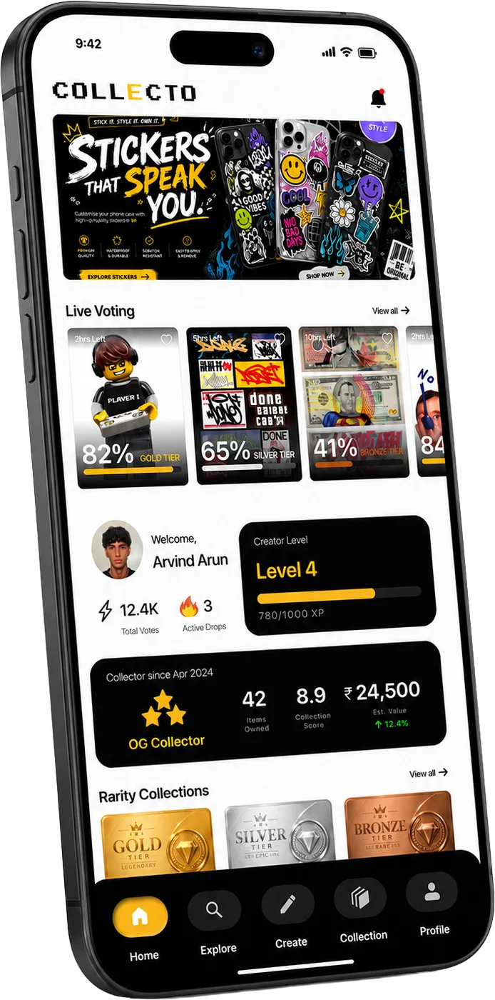
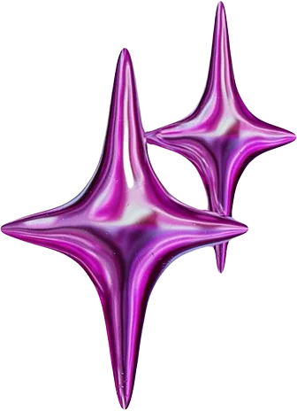
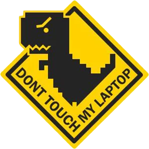
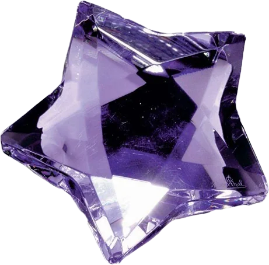
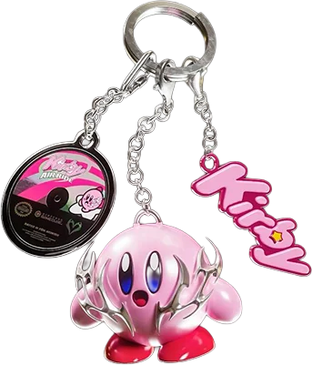
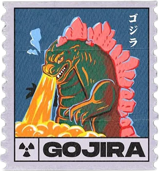
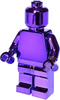
The problem
Collectibles and accessories feel repetitive and generic. Creators have low visibility and no way to know what people want before they produce it.
The solution
A community-driven platform where people discover and vote on designs before they’re made. The top designs get rarity tiers and become limited-edition collectibles.
What I did
Primary research with 100+ responses, personas, empathy map, user journey, storyboard, the core voting loop, and the app UI with product mockups.
The problem
People personalise what they carry: phones, laptops, bottles and bags. But most designs online look the same, and limited drops sell out before people even hear about them.
Users face
- Lack of unique design
- Repetitive options
- No control over products
Creators face
- Low visibility
- Uncertainty in demand
- Limited audience interaction
What 100+ people told me
I surveyed people on how they personalise their belongings and how they feel about the designs available to them.
Who it’s for
Three kinds of people kept showing up: someone who collects, someone who creates on the side, and someone who creates for a living.
The Collector
Arjun Nair, 21 · Student, Kochi
- Collects unique stickers and accessories
- Loves limited-edition drops
- Wants exclusivity
I don't want what everyone else has, I want something rare.
The Creative User
Riya Sharma, 20 · Art student, Delhi
- Creates her own designs
- Wants to turn ideas into real products
- Seeks creative freedom
I want to turn my ideas into real products, not just keep them in my sketch book.
The Creator
Kabir Mehta, 24 · Freelancer, Mumbai
- Designs digital art
- Needs visibility and demand validation
- Wants to grow his brand
I don't know what people actually want until it's too late.
Empathy map
Says
- “Most designs feel repetitive”
- “I want something unique”
- “I missed that drop again”
- “It’s hard to find rare items”
Thinks
- “Why is everything so similar?”
- “I wish I had early access”
- “I want something not everyone has”
- “There should be a better way to discover designs”
Does
- Scrolls Instagram and Pinterest
- Saves designs
- Buys occasionally
- Follows creators
Feels
- Bored with generic designs
- Frustrated with the lack of uniqueness
- Anxious about missing limited items
- Excited when finding rare designs
User journey
| Stage | User actions | Thoughts | Emotions | Pain points | Opportunities |
|---|---|---|---|---|---|
| 1. Inspiration | Browses Instagram & Pinterest, saves designs | “This looks cool.” “I want something like this.” | Excited Inspired | Too many similar designs | Curated unique feed, personalised recommendations |
| 2. Discovery | Searches online stores, visits multiple platforms | “Why does everything look the same?” | 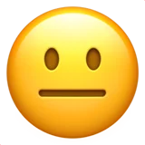 Neutral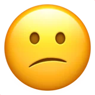 Confused | Repetitive designs, hard to find unique items | Better discovery, highlight creators |
| 3. Selection | Compares products, checks price & design | “Is this worth it?” “Is this unique enough?” | 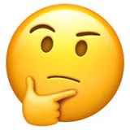 Doubt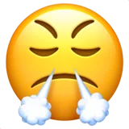 Frustration | Lack of uniqueness, no involvement in design | Voting system, community validation |
| 4. Purchase | Tries to buy, checks availability | “It’s sold out?” “I missed it again.” | 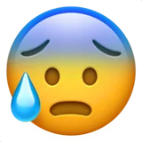 AnxietyFrustration | Missed limited drops, no early access | Early access, wishlist alerts |
| 5. Outcome | Either buys or misses the item; may look for resale | “Finally got it!” or “Now it’s too expensive.” | 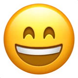 SatisfactionRegret | High resale prices, limited availability | Fair access, controlled rarity |
The key insight
People don’t just want products. They want a say in what gets made, and proof that what they own is rare.
Every stage of the journey had the same frustrations: too many similar designs, missed drops, and no involvement in what gets produced. Each one pointed to an opportunity: curated discovery, community validation, early access and controlled rarity.
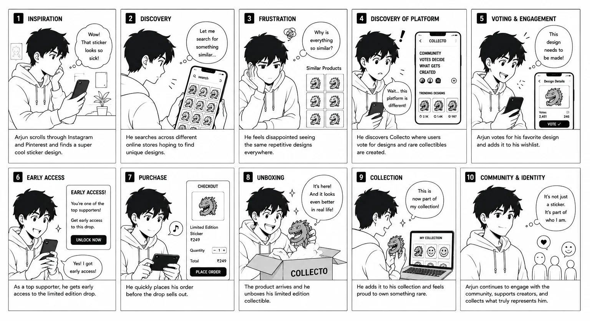
How it works
Voting turns demand into a signal creators can trust before anything is produced. Rarity tiers give collectors a reason to come back, and a public collection turns buying into identity.
The app
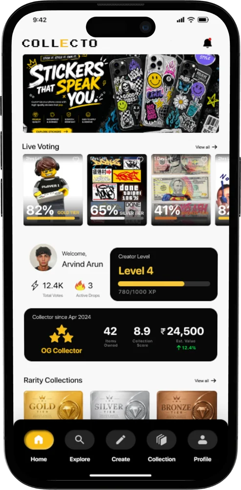
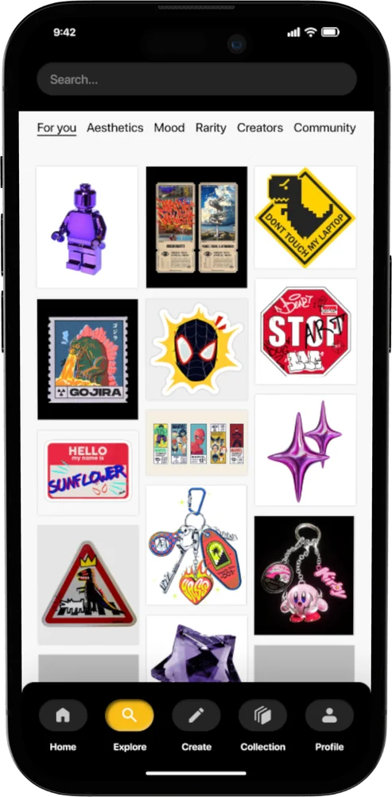
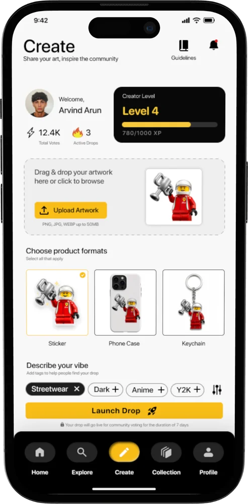
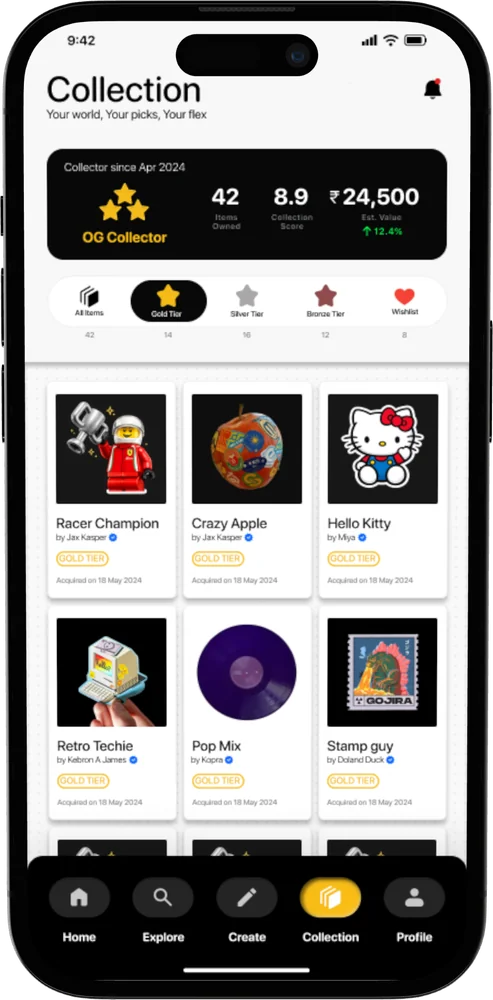
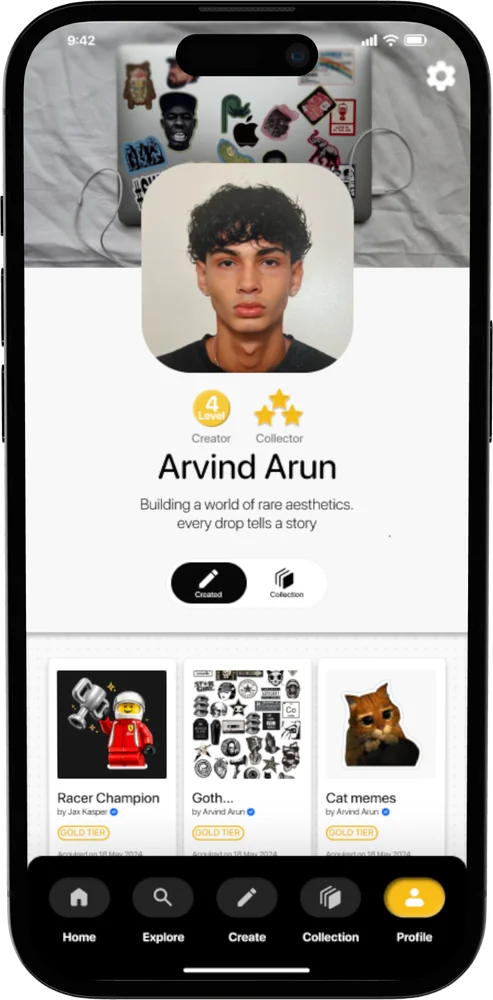
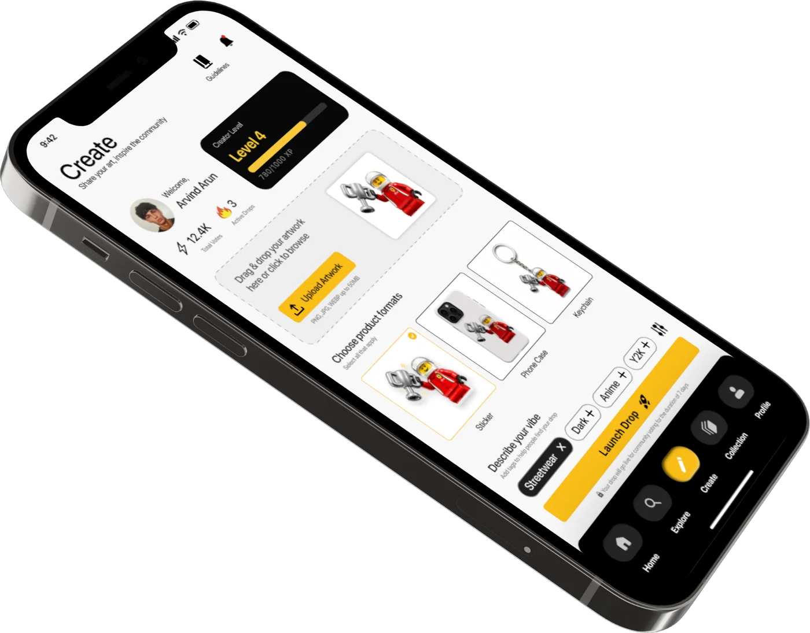
What voting unlocks
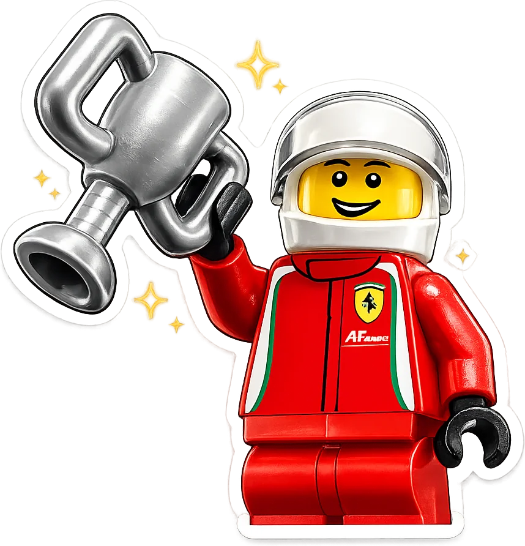
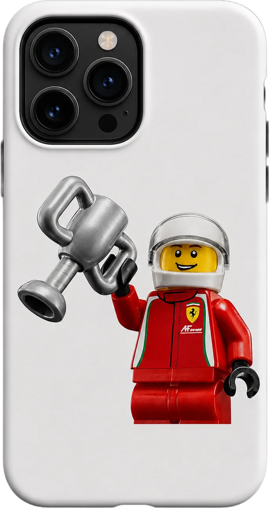
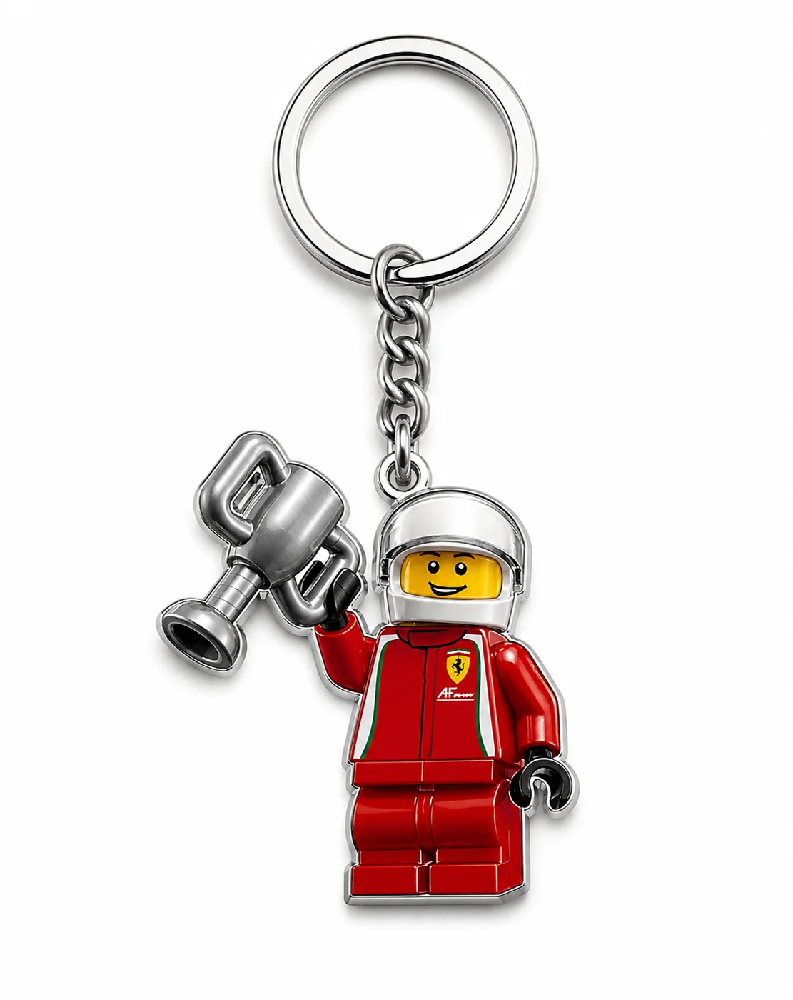
Takeaways
Collecto is a digital ecosystem where creators and collectors shape personalised products into limited-edition collectibles, through community voting, rarity systems and creative self-expression.
- Research turned a vague “people want unique stuff” into three clear needs: originality, involvement and rarity.
- Voting does two jobs at once: it engages collectors and validates demand for creators.
- Next step: test the voting and rarity loop with real users to see if it keeps them coming back.